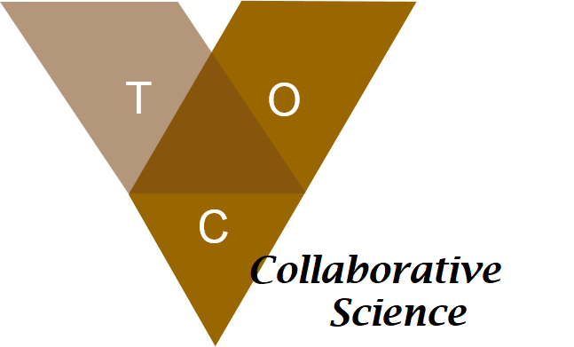

À l’affut !
Traquez les orignaux
& la tique d’hiver

*Phase Pilote - ce protocole sera adapté et disponible à l’ensemble de la population suivant son utilisation en 2020.
Nous avons besoin de vos observations d’orignaux!
elles nous permettent d’obtenir des informations à fine échelle sur les populations d’orignaux.
Pour participer
Accédez à l’enquête sur ce site web
ou en scannant ce code QR
Toutes les observations d’orignaux sont pertinentes, même si le pelage ne semble pas être affecté:
- Observation d’orignal sans photo
- Observation d’orignal avec photo(s)
- Photos de caméras de surveillance
(caméras de chasse; printemps-été seulement)
au stade adulte;
® D. De Pierre
Tutoriels disponibles:
- Comment soumettre une observation d’orignal
- Soumettre des photos de caméra-trappe (printemps)
Contexte
Ce programme de science collaborative s’inscrit dans les axes de recherche du Partenariat de recherche sur les relations tique-orignal-climat . Ce partenariat vise à comprendre et prédire la dynamique des interactions entre la tique d’hiver et les populations d’orignaux de l’est du Canada en fonction des conditions climatiques actuelles et anticipées.
Ailleurs dans le Nord de l’Amérique, la tique d’hiver est associée à des déclins de population importantes, et c’est pourquoi nous sollicitons votre aide en tant que chasseur.euse, pêcheur.euse, professionel.le ou randonneur.euse.
Nous en sommes à la phase pilote; vos suggestions, commentaires, appréciations et questions sont les bienvenues à l’adresse courriel suivante : toc@bio.ulaval.ca. Le développement du programme de science collaborative est dirigé par une équipe de recherche basée à l’Université Laval.
Information
Pour de plus de détails sur le Partenariat de recherche sur les relations tique-orignal-climat, les objectifs, axes de recherche et chercheurs impliqués rendez-vous ici .
Contactez-nous
Superviseur du partenariat de recherche TOC : Jean-Pierre Tremblay , professeur titulaire
Responsable du projet de science collaborative : Florent Déry
Département de biologie, Université Laval 1045 av. de la médecine, Québec (Qc), G1V 0A6
Partenaires